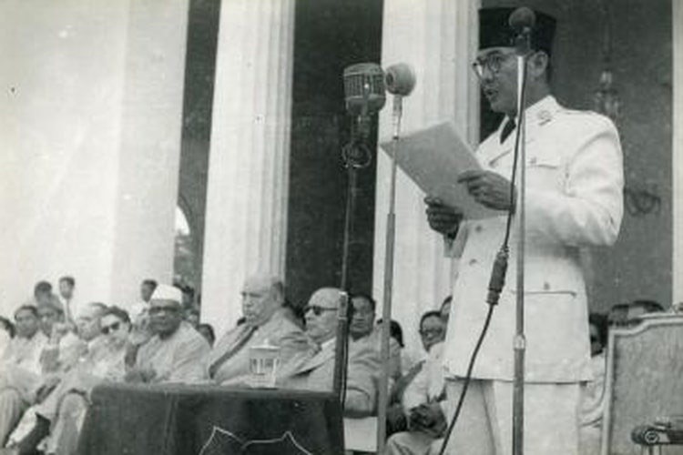
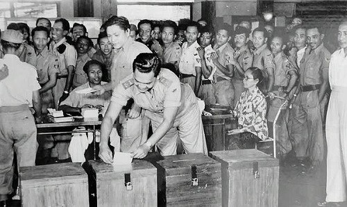
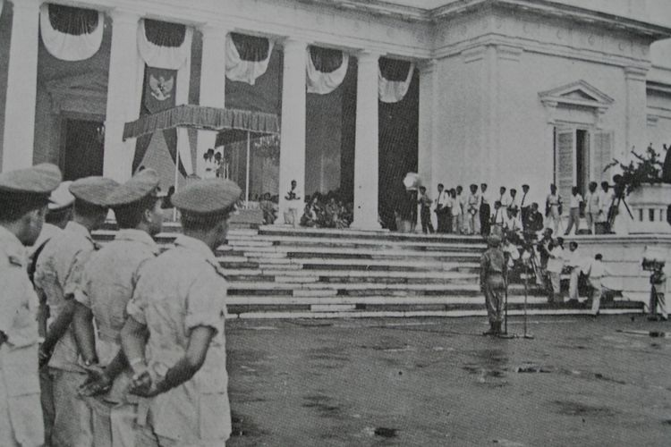
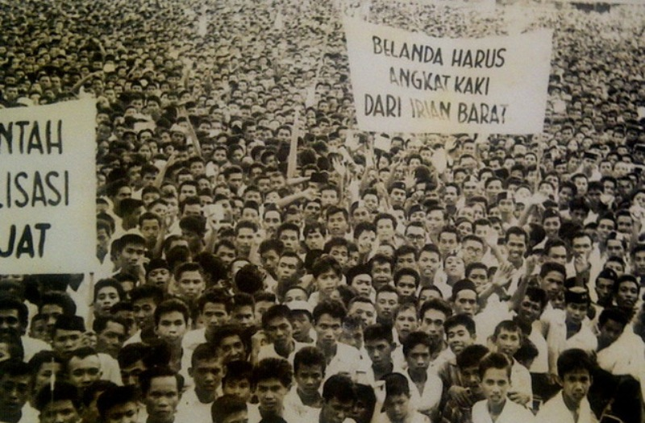
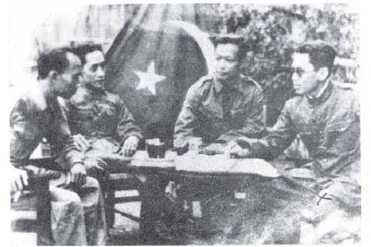
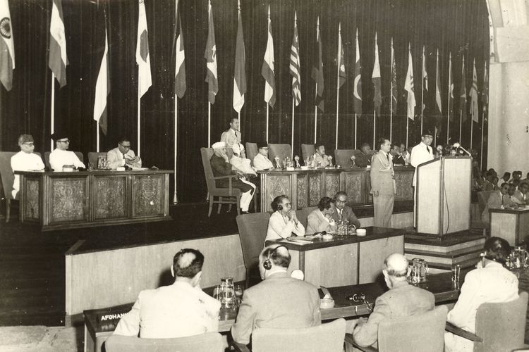
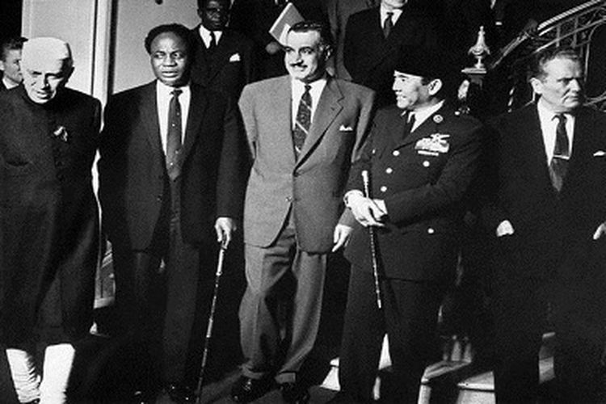
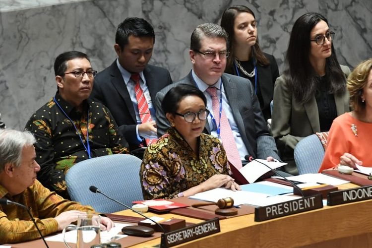

| A. Indonesia pada Masa Demokrasi Liberal dan Demokrasi Terpimpin | ||
|---|---|---|
| 1. Proses Kembalinya Indonesia sebagai Negara Kesatuan | 2. Pemilihan Umum Pertama RI Tahun 1955 | 3. Dekrit Presiden 5 Juli 1959 dan Pengaruh yang Ditimbulkannya |
|

15 Juli 1946. Dr. H.J. Van Mook menyelenggarakan konferensi di Malino, Sulawesi Selatan untuk membahas pembentukan negara bagian. Belanda berencana membentuk negara-negara boneka dalam politik “Devide Et Impera” untuk memudahkan mengadu domba RI. Negara boneka bentukan Belanda terdiri dari 6 negara bagian dan 9 daerah otonom. Enam negara bagian tersebut adalah:
Daerah otonom (istimewa) terdiri dari:
Negara boneka Belanda dinamakan Badan Permusyawaratan Federal (Bijeenkomst voor Federal Overleg) dan diketuai Sultan Hamid II. Negara ini menjadi awal mula dari Negara Indonesia Serikat (NIS). 27 Desember 1949. Kedaulatan Indonesia diakui dalam bentuk negara federal yang bernama RIS (Republik Indonesia Serikat) yang dibuat di Den Haag Belanda. Kemudian, pada 17 Agustus 1945, timbul kesadaran untuk menjadi negara kesatuan. Di berbagai daerah ada pergerakan yang menuntut kembalinya bentuk negara kesatuan. 8 Maret 1950. Pemerintah RIS di Jakarta mengeluarkan Undang-Undang Darurat No. 11 Tahun 1950 tentang Tata Cara Perubahan Susunan Kenegaraan RIS. Pada 5 April 1950, negara RIS hanya tinggal 3 negara bagian yaitu Republik Indonesia (RI), Negara Sumatera Timur (NST) dan Negara Indonesia Timur (NIT). 19 Mei 1950. Ada perundingan antara pemerintah RIS (diwakili oleh Drs. Moh. Hatta) dan pemerintah RI (diwakili oleh Wakil Perdana Menteri Abdul Halim). Kesepakatan yang terdapat adalah sebagai berikut:
Panitia diketuai oleh Prof Dr. Mr. Soepomo dan Abdul Halim. 21 Juli 1950, rancangan naskah UUD disepakati. 14 Agustus 1950, disahkan Rancangan UUD NKRI yang dikenal dengan UUDS 1950. UUD ini adalah konstitusi ketiga selama bangsa Indonesia merdeka. 17 Agustus 1950, RIS bubar dan terwujud kembali Negara Kesatuan Republik Indonesia (NKRI). |

Pemilu pertama ini berlangsung dalam dua tahap, yaitu:
Pemilu tahap pertama diikuti oleh 37.875.299 orang, sehingga dianggap sukses karena besarnya antusiasme masyarakat. Hal ini menunjukkan kesadaran politik yang tinggi di kalangan rakyat. Dari 28 kontestan pemilu yang ikut pada pemilu pertama, akhirnya muncul 4 partai terkemuka yaitu Masyumi, PNI, NU dan PKI. Kemudian, pemilu I RI tahap kedua yang dilaksanakan pada 15 Desember 1955 berhasil menetapkan anggota-anggota yang duduk dalam Konstituante untuk menyusun UUD. |

A. Upaya Konstituante Menyusun UUD Konstituante mulai bersidang pada 10 November 1956, tetapi belum berhasil merumuskan UUD sammpai 1958. Pada 25 April 1959, Presiden Soekarno menganjurkan kembali ke UUD 1945, dan pemungutan suara dilakukan pada 30 Mei 1959. 269 suara menyetujui dan 199 suara tidak. Pemungutan suara diulang pada 1 dan 2 Juni 1959. Setelah kegagalan lagi, Konstituante memutuskan reses (istirahat dari kegiatan sidang) yang ternyata untuk selama-lamanya. Kegagalan Konstituante menetapkan UUD baru sangat membahayakan kelangsungan negara. Pada 3 Juni 1959, Letjen A. H. Nasution atas nama pemerintah mengeluarkan peraturan yang melarang kegiatan-kegiatan politik untuk mencegah ekses yang membahayakan negara. B. Dekrit Presiden 5 Juli 1959 5 Juli 1959. Pukul 17.00. Dalam upacara resmi, Soekarno mengeluarkan dekrit yang berbunyi sebagai berikut:
Dekrit itu mendapat dukungan dari masyarakat dan Mahkamah Agung, juga disetujui DPR dalam sidangnya pada 22 Juli 1959. Pengaruh Lahirnya Dekrit Presiden 5 Juli 1959 Sejak Dekrit Presiden 5 Juli 1959 mendapat sambutan positif dari rakyat, Indonesia memasuki babak sejarah baru, yaitu berlakunya kembali UUD 1945 dalam “Demokrasi Terpimpin.” Demokrasi terpimpin berarti kedaulatan rakyat yang dipimpin oleh hikmat kebijaksanaan dalam permusyawaratan/perwakilan yang bermakna kedaulatan ada di tangan rakyat dan sepenuhnya dilakukan oleh MPR. Akan tetapi, makna tersebut ditafsirkan lain oleh pemerintah; Soekarno menafsirkan “terpimpin” sebagai suatu figur pimpinan yang memiliki peran menentukan dalam mengambil keputusan-keputusan yang tepat agar pemerintahan dapat berjalan dengan baik. Akibatnya, kekuasaan berpusat di tangan eksekutif (Presiden) daripada lembaga legislatif (DPR). Presiden Soekarno membentuk MPRS melalui Penetapan Presiden No. 2 Tahun 1959. Di antara 1960-1965 MPRS melakukan 3 kali persidangan yang dilaksanakan di Gedung Merdeka Bandung, yang berisi sebagai berikut:
|
| 4. Perjuangan Bangsa Indonesia Merebut Irian Barat | 5. Gejolak Keamanan Dalam Negeri yang Mengancam Disintegrasi Bangsa | |
|

Sesuai kesepakatan dalam Konferensi Meja Bundar (KMB) 1949, seharusnya wilayah Irian Barat sudah menjadi wilayah Indonesia. Namun, Belanda mengingkari janjinya dan sengaja menjadikan masalah Irian Barat menjadi berlarut-larut. A. Perjuangan Melalui Jalur Diplomasi Maret 1950, diadakan Konferensi Uni Indonesia-Belanda di Jakarta untuk membahas masalah Irian Barat dan ketatanegaraan Indonesia. Konferensi ini tidak membuahi kesepakatan. Sejak sidang 21 September 1954, pemerintah Indonesia selalu membawa masalah Irian Barat dalam forum Sidang Umum PBB, namun tidak mencapai keputusan. Akhirnya, pada 10 Desember 1954, PBB mengesampingkan masalah Irian Barat dalam sidang-sidang berikutnya yang berarti persoalan Irian Barat bukan lagi menjadi urusan PBB. B. Perjuangan melalui Jalur Konfrontasi 10 Agustus 1954. Indonesia menyatakan pembubaran Uni Indonesia-Belanda. Hubungan Indonesia dan Belanda merupakan sebuah hubungan yang lazim antara negara-negara yang berdaulat berdasarkan hukum Internasional. Pada 18 November 1957, diselenggarakan rapat umum pembebasan Irian Barat di Jakarta. Muncul aksi mogok para buruh terhadap perusahaan-perusahaan Belanda. Pemerintah RI juga melakukan nasionalisasi pada perusahaan-perusahaan milik Belanda di Indonesia karena perusahaan tersebut lebih menguntungkan Belanda daripada kesejahteraan rakyat Indonesia. C. Pembentukan Tri Komando Rakyat (Trikora) Ketegangan antara Indonesia dan Belanda memuncak sejak 17 Agustus 1960, saat pemerintah RI secara resmi memutuskan hubungan diplomatik dengan pemerintahan Kerajaan Belanda. Pada 19 Desember 1961, Presiden Soekarno membacakan Trikora dalam rapat raksasa di alun-alun utara Yogyakarta. Isi Trikora sebagai berikut:
2 Januari 1962. Pemerintah membentuk Komando Mandala Pembebasan Irian Barat yang dipimpin oleh Mayjen Soeharto. 15 Januari 1962, terjadi pertempuran di laut Arafuru. Kapal MTB Macan Tutul ditenggelamkan oleh Belanda. D. Kembalinya Irian Barat ke Dalam Wilayah NKRI Elsworth Bunker, seorang diplomat AS, diutus untuk menengahi perselisihan Indonesia dan Belanda. Pada 15 Agustus 1962, bertempat di Markas Besar PBB disepakati New York Agreement, yang berbunyi:
Irian Barat menjadi provinsi ke-26, dan namanya diubah menjadi Irian Jaya. Selama 24 Maret 1969 - 4 Agustus 1969 diselenggarakan penentuan pendapat rakyat (Pepera) bagi penduduk Irian Jaya; penduduk diberi opsi bersatu dengan RI atau membentuk negara sendiri. |

Pasca pengakuan kedaulatan, muncul instabilitas negara yang sekaligus mengancam disintegrasi bangsa. Konflik internal timbul di beberapa daerah. Contohnya adalah Pemberontakan DI/TII, APRA, Andi Azis, RMS, PRRI, Permesta, dan G30S/PKI.
Sekarmaji Marijan Kartosuwiryo adalah pemimpin tertinggi DI/TII di Jawa Barat. Cita-citanya adalah mendirikan sebuah negara Islam di Indonesia yang terpisah dari RI. Pada 7 Agustus 1949, Kartosuwiryo memproklamasikan berdirinya Negara Islam Indonesia (NII) di Tasikmalaya. Gerakannya dinamakan Darul Islam (DI) dan tentaranya Tentara Islam Indonesia (TII). Oleh karena itu, kelompok ini dinamakan DI/TII. Gerakan DI/TII merembet ke Jawa Tengah (dipimpin Amir Fatah), Sulawesi Selatan (dipimpin Kahar Muzakar), Kalimantan Selatan (dipimpin Ibnu Hadjar), dan Aceh (dipimpin Tengku Daud Beureueh). 4 Juni 1962. Kartosuwiryo, keluarga, dan pengawalnya ditangkap atas Gunung Geber daerah Majalaya. Operasi TNI juga menumpas pemberontakan DI/TII di Jawa Tengah, Sulawesi Selatan, Kalimantan Selatan dan Aceh. Bekas anggota KNIL yang tidak mau bergabung dengan APRIS (Angkatan Perang Republik Indonesia Serikat) membentuk organisasi Angkatan Perang Ratu Adil (APRA) di Bandung. APRA dipimpin Raymond Westerling, bekas perwira Belanda. APRA melakukan serangan di kota Bandung dengan membunuh setiap anggota TNI yang dijumpai. Gangguan keamanan terjadi di sejumlah tempat. Makassar (dilakukan Andi Azis dan pengikutnya), Maluku (muncul bernama Republik Maluku Selatan yang didirikan Dr. Soumokil). Muncul pemberontakan PRRI (Pemerintah Revolusioner Republik Indonesia) yang dipimpin Letkol Achmad Husein. PRRI didirikan di Padang pada 15 Februari 1958. Pergerakan politik muncul di Makassar pada 2 Maret 1957 Panglima Tentara dan Teritorium VII Letkol Ventje Sumual memproklamasikan berdirinya Piagam Perjuangan Semesta (Permesta). Gerakan ini meliputi wilayah Sulawesi, Kepulauan Nusa Tenggara, dan Maluku. PKI memberontak terhadap RI di Madiun pada 18 September 1948. Tujuannya untuk meruntuhkan negara RI dan menggantinya dengan negara komunis. Pemerintah RI mampu menumpas pembuat makar bagi negara. 17 tahun kemudian, pemberontakan PKI berulang dengan timbulnya peristiwa yang dikenal sebagai G30S/PKI. Di akhir masa Demokrasi Terpimpin, RI dilanda krisis sosial politik dan ekonomi nasional. Kondisi ini memberi peluang pada PKI untuk memperluas pengaruhnya. Adanya pemberlakuan doktrin Nasakom (Nasional, Agama dan Komunis) makin memperkokoh kedudukan PKI dalam percaturan politik RI. Pengaruh PKI berdampak luas terhadap kebijakan pemerintah. Semua organisasi yang anti-komunis atau anti-PKI dapat dituduh anti-pemerintah. Agustus 1960, PKI berhasil mendorong pemerintah untuk membubarkan partai Masyumi dan PSI. Kelompok Manifesto Kebudayaan (Manikebu) juga dibubarkan pemerintah pada Mei 1964. Manikebu dianggap sebagai musuh Lembaga Kebudayaan Rakyat (Lekra) yang merupakan salah satu organisasi pendukung PKI dalam bidang kebudayaan. PKI menganggap Angkatan Darat (AD) merupakan penghalang utama untuk menjadikan Indonesia negara komunis dan merencanakan menyingirkannya. 30 September 1945, PKI melancarkan gerakan perebutan kekuasaan yang dipimpin Letkol Untung Sutopo selaku Komandan Batalion I Resimen Cakrabirawa. 1 Oktober 1965. Pasukan pemberontak menyebar ke segenap penjuru Jakarta. Mereka menculik dan membunuh dengan kejam 6 perwira tinggi Angkatan Darat, yaitu: Jenderal Abdul Haris Nasution, sasaran utama, berhasil meloloskan diri. Namun putrinya, Ade Irma Suryani, meninggal karena luka tembakan. Tewas pula Lettu Pierre Andreas Tendean, ajudan A.H. Nasution yang dibunuh karena melakukan perlawanan terhadap PKI. Brigadir Polisi Sasuit Tubun juga tewas mengawal rumah Wakil Perdana Menteri II Dr. J. Leimena yang berdampingan dengan Jenderal A. H. Nasution. PKI menyiksa dan membunuh perwira AD. Mayatnya dimasukkan ke dalam sumur kering berkedalaman 12 meter yang dikenal dengan nama Lubang Buaya. Setelah berhasil membunuh perwira AD, PKI menguasai 2 sarana komunikasi vital yaitu studio RRI di Jl. Merdeka Barat dan Kantor Telekomunikasi di Jl. Merdeka Selatan. PKI membentuk Dewan Revolusi yang terdiri dari 45 orang dan diketuai oleh Letkol Untung Sutopo. Di Jawa Tengah dan DI Yogyakarta, PKI membunuh Kolonel Katamso dan Letnan Kolonel Sugiyono. |
|
| B. Peran Indonesia dalam Kerja Sama Internasional | ||
| Di era globalisasi, tingkat ketergantungan semakin tinggi antar negara. Pemerintah RI juga semakin proaktif memainkan peran dalam organisasi dan pertemuan internasional seperti misalnya: | ||
| 1. Peran Indonesia dalam KAA (Konferensi Asia Afrika) | 2. Peran Indonesia dalam Gerakan Non Blok | 3. Peran Indonesia dalam PBB |
|

Pada tahun 1955, Pemerintah RI berhasil menyelenggarakan Konferensi Asia Afrika (KAA) di Bandung. Terselenggaranya KAA didasari pertimbangan hal-hal sebagai berikut:
Dari 30 negara yang diundang KAA, sebanyak 29 negara hadir yang terdiri atas 23 negara Benua Asia dan 6 negara dari Benua Afrika. Hanya 1 negara yang berhalangan hadir yaitu Federasi Afrika Tengah (Rhodesia dan Nyasa) yang tengah dilanda pergolakan politik yakni pertentangan antara penduduk asli kulit hitam kepada dominasi kulit putih. KAA berhasil mencetuskan sepuluh prinsip yang tercantum dalam Declaration on The Promotion of World Peace and Cooperation. Kesepuluh prinsip itu terkenal dengan sebutan Dasasila Bandung yang isinya sebagai berikut:
Berkat KAA, banyak negara di Asia dan Afrika menjadi merdeka dan memiliki kedudukan yang sama dalam kancah politik dunia. Peran Indonesia dalam KAA telah ikut meredakan ketegangan dunia akibat pertentangan Blok Barat dan Blok Timur. Terhitung sejak pelaksanaan KAA yang pertama, KAA ke 3 telah dilaksanakan di Jakarta dan Bandung pada 19-24 April 2015. Pada KTT tersebut dihasilkan deklarasi sebagai berikut:
|

Gerakan Non Blok (GNB) atau Nonaligned Movement (NAM) merupakan wadah negara-negara yang tidak memasuki blok Barat ataupun blok Timur. Gerakan Non Blok adalah suatu gerakan yang aktif sebagai subjek yang ikut berperan dalam menghadapi peristiwa-peristiwa Internasional. Tokoh-tokoh pemrakarsa berdirinya GNB dikenal sebagai The Initiative of Five, yaitu:
Peran serta Indonesia dalam GNB cukup signifikan, yakni:
|

Lembaga Internasional yang dianggap mewakili kepentingan dunia adalah PBB (Perserikatan Bangsa-Bangsa) atau UNO (United Nations Organization). PBB didirikan pada 24 Oktober 1945 di San Fransisco Amerika Serikat. Saat ini PBB bermarkas di New York. Wujud aktivitas dan peran Indonesia dalam membantu tugas-tugas PBB antara lain:
|